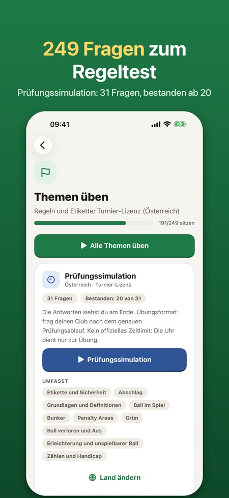
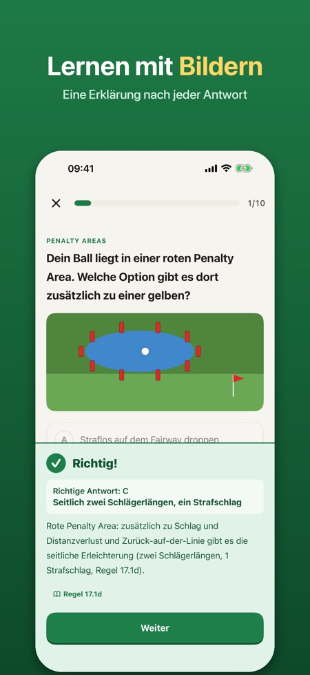
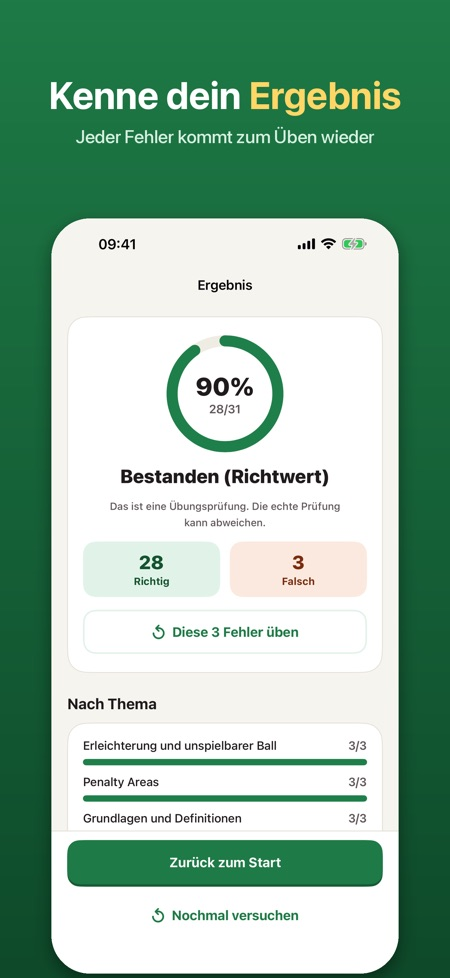

Golfregeln & Etikette üben. Jetzt 249 Fragen, auch zu den Regeländerungen 2023. Üben für den Regeltest zur Turnier-Lizenz, mit Erklärung nach jeder Antwort.



Mach dich bereit für den Regeltest zur Turnier-Lizenz in Österreich (früher Platzreife) und lerne Regeln und Etikette für den Golfplatz. Einmal zahlen, kein Abo.
DAS BEKOMMST DU
• 249 Fragen in 10 Themen: Etikette und Sicherheit, Abschlag, Grundlagen, Ball im Spiel, Bunker, Penalty Areas, Grün, Ball verloren und Aus, Erleichterung und unspielbarer Ball, Zählen und Handicap
• Bildfragen mit gezeichneten Situationen vom Platz (Penalty Areas, Auspfähle, Abschlagsbereich, Weg)
• Eine Erklärung nach jeder Antwort, auf Deutsch, Englisch, Norwegisch, Schwedisch oder Finnisch
• Prüfungssimulation wie der Regeltest: 31 Fragen, bestanden ab 20 richtigen Antworten
• Deine Fehler kommen wieder, bis du sie zweimal hintereinander richtig beantwortet hast
• Regelsuche: kurze Antworten in einfachen Worten auf „Was tun, wenn …?“, mit Regelnummer
• Checkliste für die erste Runde: was du mitnimmst und wie du dich auf dem Platz verhältst
AUCH FÜR NORWEGEN, SCHWEDEN UND FINNLAND
Wähle dein Land, dann kommen die Fragen in der Sprache der dortigen Prüfung.
FAIRER PREIS
Zehn Probefragen, eine kurze Probeprüfung, die Regelsuche und die Checkliste sind ohne Kauf dabei. Alles freischalten mit einem einzigen Kauf. Kein Abo, keine Werbung, kein Konto. Funktioniert offline.
Der genaue Prüfungsablauf ist je nach Club verschieden; die Simulation ist Training, frag deinen Club, wie die Prüfung abläuft.
Die App ist unabhängig und nicht mit dem Österreichischen Golf-Verband, dem R&A oder der USGA verbunden. Alle Fragen und Regel-Kurzfassungen sind von uns geschrieben; es sind keine offiziellen Prüfungsfragen und kein Regeltext.